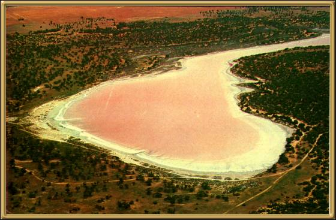

These lakes truly are just as pink, if not pinker than
this photo shows, however many of the lakes are often just dry salt pans. It is not
a heavily visited area, as it not easy to get to, but if you're looking for somewhere out
of the way, it is a very attractive place to visit.
Photographer: Unknown